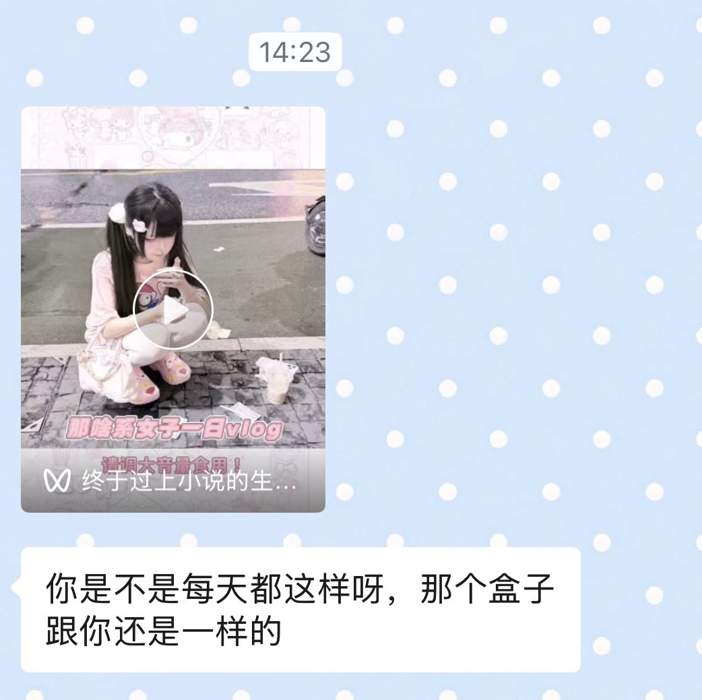

🎀超絶最かわ🎀てんしちゃん
@safrerkv
@ib3t1gg 好没边界感啊我去

说清楚就不可爱了
@ib3t1gg
被没情商室友看到手上的疤之后日常就是。
在班里突然问“你请假是在家自残吗，你是地雷女吗”
我随身带应急药包，她看到在那问“唉你是不是也磕药啊，我看网上那些地雷妹都这样”
“哎呀我有一个朋友也自残，她也……”
不回答就一直在全是人的时候大声反复问。一定要我大声制止才会停。
放假了突然给我发。 https://t.co/G7ymZJnpZP